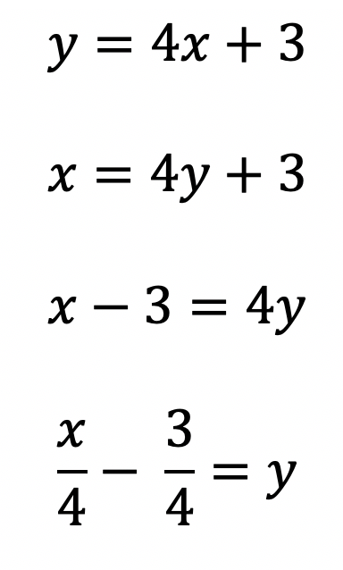
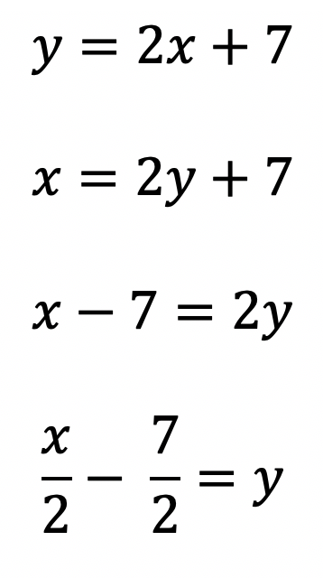
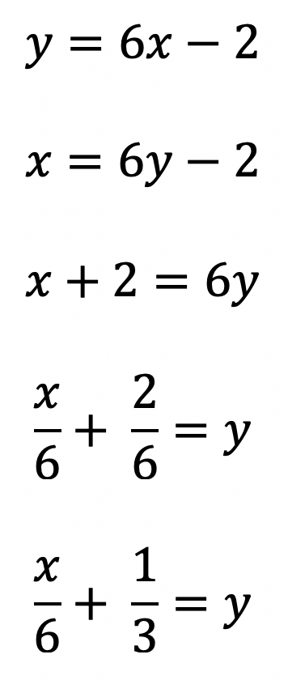

The "Inverse" of an Equation f(x) is defined as an equation, g(x), that is the result of switching the x and y in the first equation then solving that equation for y. Creating a second equation called g(x).
Rule: To find an Inverse Equation for a function, switch x and y, and then solve the equation for y.
Example: Find the equation of the inverse.



As you can see in the examples above, each example begins with the switching of x and y. To solve the equation for y, always add or subtract the constant term to move it to the left side of the equal sign, then divide both sides of the equation by the coefficient of y (the number infront of y).
Careful: Don't forget to simplify the fractions when you can!
Let's work out a few examples together to see if you got it!
Try this: Find the equation of the inverse of y = 7x + 3.
Find the equation of the inverse of y = (x + 4) / 5
Find the equation of the inverse of y = (x - 6) / 2